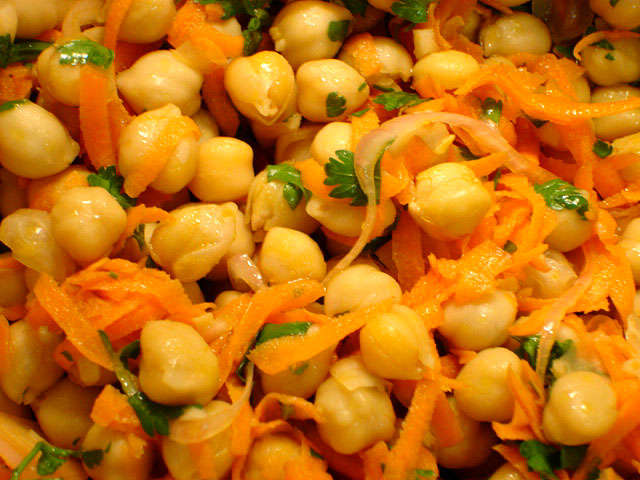

The simple and the unsexy
After a weekend of cream puffs, a girl’s got to take a breather.
Moderation is horribly unglamorous, I know. But, dear reader, I also know that you’re the sort who values truth—ugly, unwashed, morning breath and all.
I’ll give it to you straight: I channel the USDA food guide pyramid. I don’t mean the new recommendations announced last month, which are well-meaning but unrealistic at best—three cups of dairy products per day for the average adult?!—but rather the concept of the food pyramid. I’m not sure how this came to be, but I’m crazy about the five major food groups. I love them equally, the way a mother loves her children. Brussels sprouts speak to me as sweetly as crusty bread, and to my ears, the crunch of an apple is as good as the sizzle of a roasting chicken. Nurse Flinn must have done an exemplary job of teaching health class back in third grade. Someone needs to tell her that I’m still waiting for my hard-earned A+ gold star stickers.
Now, this is not to say that I don’t have fried chicken dreams, or that I can forgo dessert. I think I’ve made it amply clear that I go weak in the knees before any number of things sweet, jammy, fruity, nutty, buttery, crunchy, cakey, creamy, or frozen. But I also want my roasted cauliflower, my grains, and a hunk of beast. I want it all, damn it. If life itself is the proper binge, as dearly departed Julia once said, I’ve got to make room for everything. Enter that boring “m” word, that thing I mentioned in the first paragraph. If I’m to be civilized and presentable, I must have my daily dark chocolate, but not enough to have me moaning and slumped on the floor. Not often, at least. Well, you know me. Ahem.
The foods and recipes I feature most often on Orangette aren’t fancy or complex. I love to eat as much as the next guy, but I also love simplicity—honest food that nourishes, that lets ingredients speak for themselves. And that features all five food groups. Truth be told, the majority of my meals consist of simple, unsexy staples: this winter it’s pungent, buttery, melting fontina on coarse bread; unruly greens braised into submission; and, of course, cabbage, the season’s princely toad. Sometimes nothing is more welcome than a sunny-side-up egg, flecked with salt and freshly ground pepper, blanketing a bowlful of red lentil dal. And lately, there’s been a parade of citrus. Around here, it’s an (heirloom navel) orange a day, perfumed and spicy, spraying bitter orange oil over my fingers and wrists; and after a late, loud, smoky night out, I’ve been known to sneak a slathering of lemon curd on whole wheat toast before bed—your typical rock ‘n roll gourmandise.
And this week, after so much whipped cream and whatnot, I’m reaching for warm chickpea salad.

Another standby from Lynne Rossetto Kasper’s Splendid Table Weeknight Kitchen newsletter, it’s earthy and clean, sweet with shredded carrots and punchy with red wine vinegar. It’s horribly unglamorous and completely delicious, the sort of thing that makes you want to dive headlong into the bowl—and then have cream puffs for dessert.
Ahem.
Warm Chickpea Salad with Shallots and Red Wine Vinaigrette
Adapted from The Splendid Table Weeknight Kitchen, which in turn excerpted from Fresh Food Fast: Delicious, Seasonal Vegetarian Meals in Under an Hour
Lynne Rossetto Kasper recommends serving this with a leafy tossed salad, but I also like it with braised or sautéed winter greens. Either way, be sure to have a loaf of crusty bread alongside. Leftovers keep beautifully in the fridge and make for tasty lunches.
1 large shallot, thinly sliced
3 Tbs red wine vinegar
1 garlic clove, minced
¼ tsp sea salt, plus more to taste
2 (15-ounce) cans chickpeas, drained
1 large carrot, coarsely grated
½ cup flat-leaf (Italian) parsley leaves, chopped
1/3 cup extra-virgin olive oil
Freshly ground black pepper
In a large bowl, combine the shallot, vinegar, garlic, and salt. Set aside for 10 minutes to allow the shallots and garlic to mellow.
In a medium saucepan over high heat, bring 2 quarts of water to a boil. Add the chickpeas, and blanch for a minute or two. Drain.
Add the carrot, parsley, and olive oil to the shallot mixture. Toss in the chickpeas, and season as needed with salt and pepper. Serve immediately, while still warm.
Serves four.